Translating Needs into Goals
Systems Architecture · Chapter 11
From Influences to Goals
- Chapters 9–10 surveyed the upstream and downstream influences the architect must navigate — but influences alone don’t tell us what to build
- This chapter develops a systematic process: identify stakeholders and their needs, characterize and prioritize those needs, and translate them into goals the architect can actually design against
- Running example throughout: a Hybrid Car project, plus a closing case study on the 1998 Nagano Olympics IT system
Figure 11.1 · The Needs-to-Goals Framework
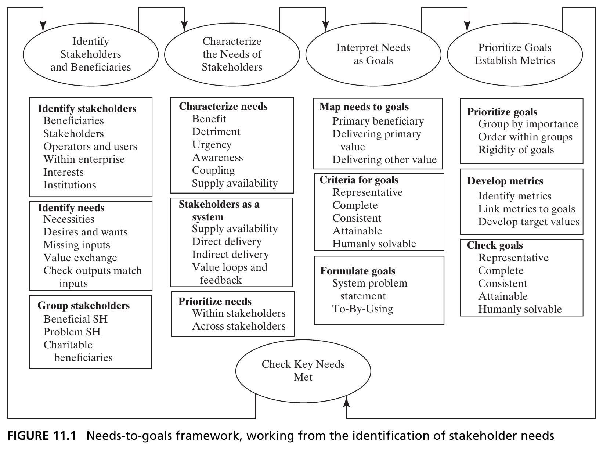
Four major steps: identify stakeholders and beneficiaries, characterize their needs, interpret needs as goals, and prioritize goals with metrics — closing the loop by checking key needs are met. Source: Crawley, Cameron & Selva (2016), Fig. 11.1.
11.2 Identifying Stakeholders and Their Needs
Setting Bounds and Granularity
Two difficulties in stakeholder analysis: setting bounds (how far to trace ripple effects — e.g., the economic multiplier of a contractor’s spending) and setting granularity (individual suppliers, or “Suppliers” as one abstraction?).
Tip
Our test for both: does the choice among architectures under consideration matter to this stakeholder? If every candidate architecture delivers the same benefit, the stakeholder still needs managing — but may not merit shaping the architectural decision.
Box 11.1 · Principle of the Beginning
“The beginning of the work is most important.” — Plato, The Republic
“Great warriors position themselves where they will surely win, prevailing over those who have already lost.” — Sun Tzu, The Art of War
- The stakeholders included at the early stages of product definition will have an outsized impact on the architecture — be very careful about who’s involved, and how they shape it
- Balance engaging stakeholders for their views against their actual decision rights — informed, consulted, voting, or veto
Figure 11.2 · Stakeholders and Beneficiaries
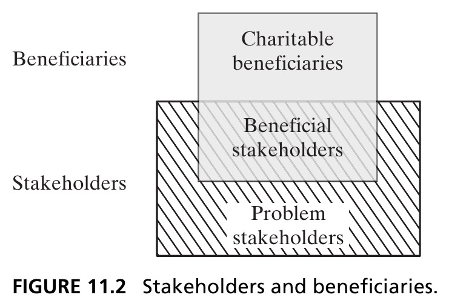
Beneficiaries are those whom the architecture addresses; you are important to them. Stakeholders have a stake in the outcome; they are important to you. Charitable beneficiaries are beneficiaries who aren’t also stakeholders. Source: Crawley, Cameron & Selva (2016), Fig. 11.2.
A Starting Checklist of Stakeholders
- Driver/owner (primary beneficiary)
- Regulator
- Producing enterprise or company
- Investors in the enterprise
- Suppliers
- Local community
- Environmental NGOs
- Competitors (e.g., oil companies)
Tip
This first-pass list gets revisited once we prioritize — treat it as a starting point, not a final answer.
Box 11.2 · Definition of Needs
A need may be defined as: a necessity, an overall desire or want, or a wish for something that is lacking.
- Needs exist in the mind (or heart) of the beneficiary — they can be unexpressed, or even unrecognized
- Needs are primarily outside the producing enterprise — they are owned by the beneficiary, not chosen by the firm
- Needs are a product/system attribute; they are interpreted, in part, by the architect
Figure 11.3 · Needs of the Beneficiaries for the Hybrid Car
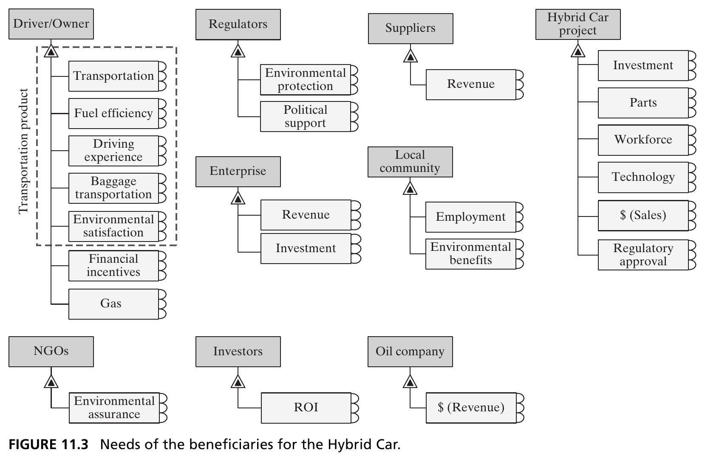
Starting with the primary beneficiary — the driver/owner — and their primary need (transportation), we work outward to the other stakeholders and their needs. Source: Crawley, Cameron & Selva (2016), Fig. 11.3.
Latent Needs
Latent needs are needs that are fundamental to the beneficiary, before the product that meets them comes into being. They are not chosen by the firm — advertising changing customer value functions is a dangerously overused idea in engineering contexts.
- How did Whirlpool know customers “needed” an ice dispenser before it existed? How did GM know drivers with cell phones would “need” OnStar?
- No set procedure identifies latent needs with certainty — the only real answers are deep scrutiny of users, iteration on concepts, and hard work
- Caution: Edison in 1922 — “The radio craze will die out in time.” Ken Olson, DEC founder, in 1977 — “There is no reason anyone would want a computer in their home.”
Needs Arise from an Exchange
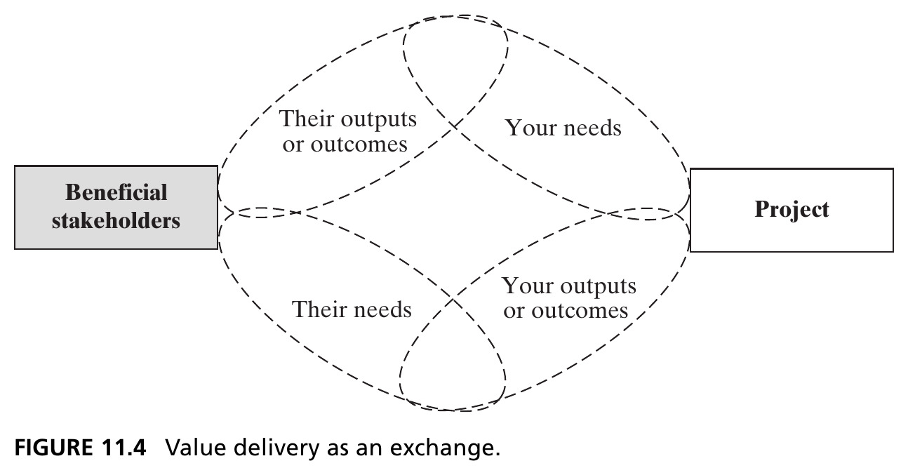
A central tenet of stakeholder theory: value results from an exchange. Your outputs satisfy their needs; their outputs satisfy yours. This completeness criterion helps surface additional stakeholders. Source: Crawley, Cameron & Selva (2016), Fig. 11.4.
Grouping Stakeholders
Having listed needs, we take a first pass at prioritizing by grouping stakeholders into three buckets:
Stakeholders who must be considered and satisfied. Stakeholders who must be considered and should be satisfied. Stakeholders who should be considered and might be satisfied.
Tip
This first-guess taxonomy — applied before an in-depth analysis — is useful precisely because it lets us later compare expectations against what analysis reveals.
Figure 11.6 · Stakeholder Prioritization for the Hybrid Car
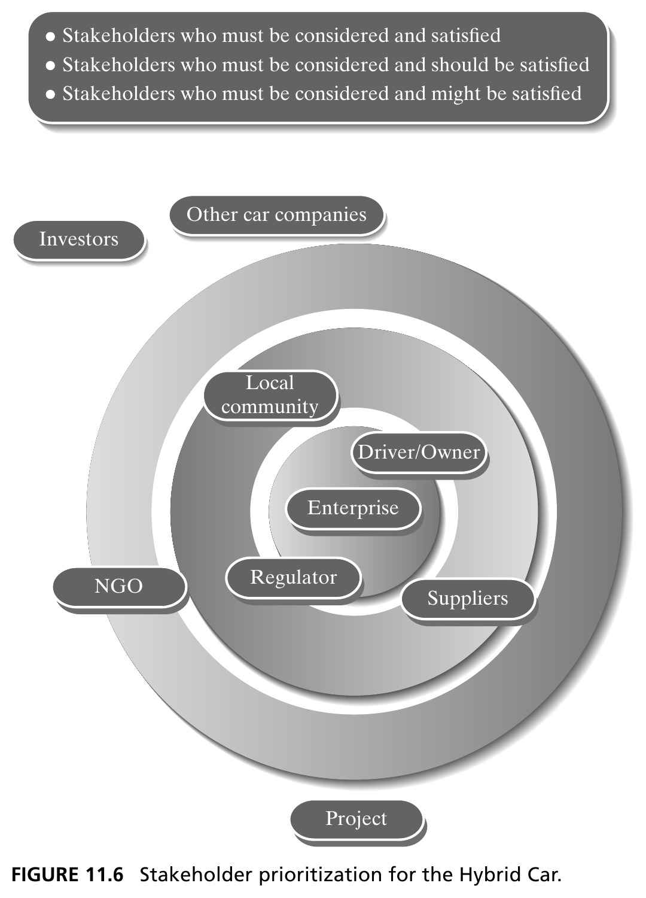
Concentric rings show the first-guess priority: enterprise and regulator innermost, then driver/owner and local community, then suppliers, NGOs, and investors — with other car companies and the project itself outside. Source: Crawley, Cameron & Selva (2016), Fig. 11.6.
Section 11.2 Summary
- Stakeholder analysis requires setting bounds and granularity — test both against whether the choice among candidate architectures would matter to that stakeholder
- Needs exist in the beneficiary’s mind — they are unexpressed, latent, and never invented by the firm, only interpreted by the architect
- Value delivery is fundamentally an exchange — tracing outputs and inputs both ways is what reveals a complete stakeholder list
- A first-guess grouping of stakeholders, made before deep analysis, is a useful checkpoint against later, more rigorous prioritization
11.3 Characterizing Needs
Dimensions of Stakeholder Needs
“Find the appropriate balance of competing claims by various groups of stakeholders. All claims deserve consideration but some claims are more important than others.” — Warren G. Bennis
Five dimensions along which needs can be characterized: benefit intensity (utility/worth), detriment (adverse reaction if unmet), urgency (how quickly it must be fulfilled), awareness (how aware stakeholders are of it), and coupling (how it relieves or intensifies other needs).
Figure 11.7 · Kano Analysis
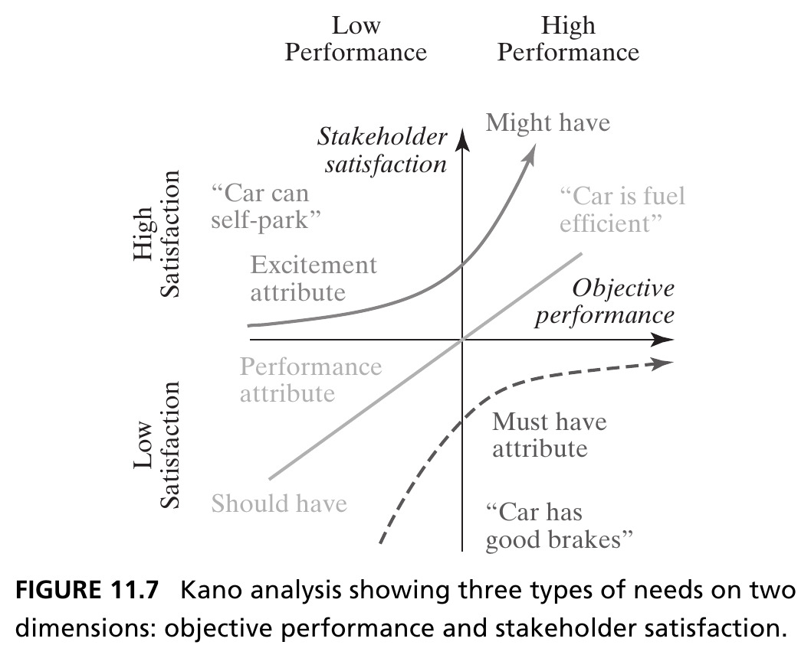
Three categories: Must have (unmet → strong dissatisfaction; met → no extra credit — “good brakes”), Should have (roughly linear satisfaction — “fuel efficient”), Might have (an excitement/delight attribute — “self-parking”). Categories shift over time as features become expected. Source: Crawley, Cameron & Selva (2016), Fig. 11.7.
Judgment Still Matters
- In many markets, formal methods for prioritizing needs (like Kano analysis) are outmatched by the judgment of seasoned individuals — where large consumer data sets exist, or mature technical buying criteria prevail, analysis is more valuable; otherwise, judgment should not be supplanted
- There are many methods for comparing needs within one stakeholder, but few for comparing needs across stakeholders — this tests the limits of human reasoning given the sheer number of needs possible
Stakeholders as a System
- Taken as a group, the set of stakeholder exchanges itself forms a system — we can build a stakeholder map
- Three steps: (1) who could satisfy each stakeholder’s needs? (2) what are the project’s outputs, and to whom do they flow? (3) combinatorially pair stakeholders and check for relevant transactions between them
Figure 11.8 · Hub-and-Spoke Stakeholder Map
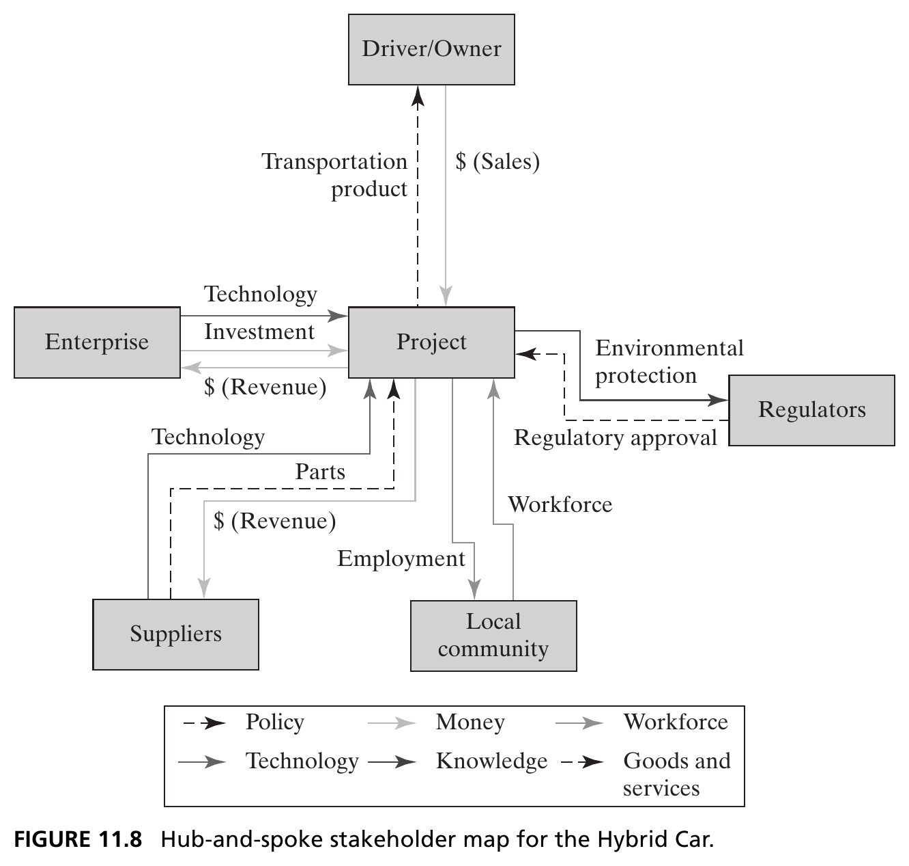
The project as hub, with flows to and from each stakeholder — six categories: policy, money, workforce, technology, knowledge, goods and services. Source: Crawley, Cameron & Selva (2016), Fig. 11.8.
Figure 11.9 · The Full Stakeholder Network
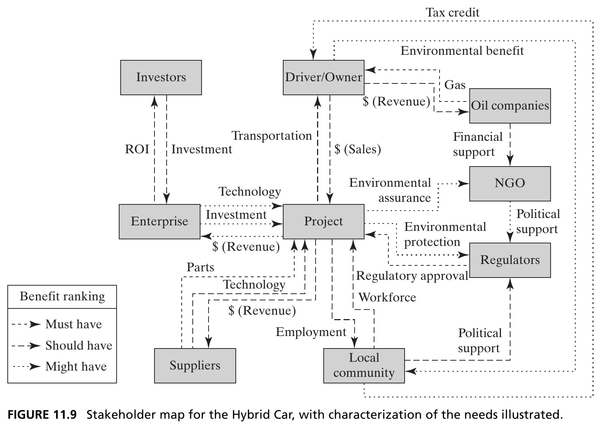
Pairing stakeholders combinatorially reveals indirect transactions — like the tax credit flowing from local community to driver/owner. NGOs, oil companies, and investors appear here even though they were absent from the hub-and-spoke view, because they don’t transact directly with the project. Source: Crawley, Cameron & Selva (2016), Fig. 11.9.
Value Loops and Indirect Transactions
A value loop is a series of value flows that return to the starting stakeholder — the system behavior of the stakeholder network.
- Indirect transactions have one or more intermediaries between the firm and the end stakeholder — common in complex systems, e.g., a firm securing a foreign contract through a local partner who, in turn, provides jobs to a government that grants the contract
- We prioritize outputs by tracing backward from important inputs, through the chain, to the stakeholders who ultimately provide them — not just by direct transaction size
Figure 11.14 · Prioritized Needs for the Hybrid Car
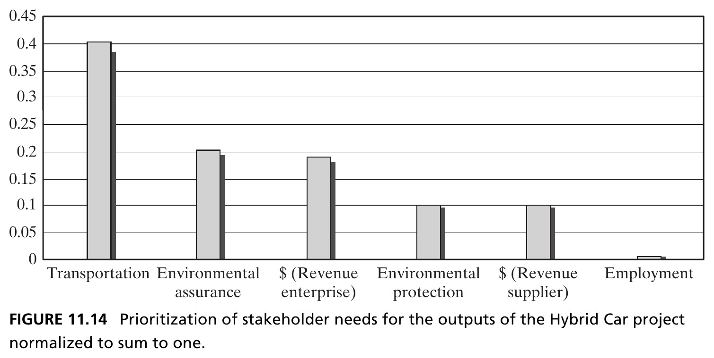
Computing value-loop strength across the stakeholder network yields a ranked, normalized priority for the outputs the project must deliver — transportation dominates, but environmental assurance and enterprise revenue matter too. Source: Crawley, Cameron & Selva (2016), Fig. 11.14.
Box 11.3 · Principle of Balance
“Bring balance to the Force, not leave it in darkness…” — Obi-Wan Kenobi
“No complex system can be optimized to all parties concerned.” — Eberhardt Rechtin
- One may never be able to enumerate, let alone quantify, all the factors — one must make tradeoffs among the factors that come close to satisfying the recognized influences
- The system must be balanced as a whole, not just the sum of balanced elements
- The architect is always balancing optimality against flexibility — the more optimized for a given application, the less flexible to new use cases and technologies
Section 11.3 Summary
- Needs are characterized along several dimensions — Kano analysis is one useful conceptual model, but judgment often outperforms formal methods
- Treating the stakeholder set as a system — with value loops and indirect transactions — reveals stakeholders and priorities invisible from a purely direct, hub-and-spoke view
- Balancing competing stakeholder claims, not optimizing to any single one, is the essence of good architecture
11.4 Interpreting Needs as Goals
Box 11.4 · Definition of Goals
Goals are defined as: what is planned to be accomplished, and what the producing enterprise hopes to achieve. Goals are a product/system attribute.
- Needs exist in the stakeholder’s mind; goals are defined by the producing enterprise with the intent of meeting those needs
- Goals are under the architect’s control — they are not static, and are often traded off against other product attributes in design
Five Criteria for Goals
| Criterion | Meaning |
|---|---|
| Representative | Goals reflect stakeholder needs — meeting the goals meets the needs |
| Complete | Satisfying all goals satisfies all prioritized needs |
| Humanly Solvable | Goals are comprehensible and aid the problem solver |
| Consistent | Goals do not conflict with each other |
| Attainable | Goals can be reached with available resources |
For comparison, INCOSE’s eight requirement criteria collapse into essentially the same five, once “necessary/implementation-independent/clear-and-concise” are folded into Representative and Humanly Solvable. Source: Crawley, Cameron & Selva (2016), §11.4.
Crafting Humanly Solvable Goals
- The problem statement itself is one of the architect’s greatest levers — it predisposes how human designers interpret the goals
- Extraneous information distracts, even if not strictly wrong: “Find the voltage drop across a 5-ohm resistor… in a 120-V DC circuit” — the “120-V DC circuit” detail can mislead designers into reasoning about resistance–temperature dependency that was never intended
- Information not in the problem statement may be wrongly assumed excluded — crafting a statement is a balancing act: enough solution-neutral information, without extraneous or misleading detail
Tip
Maier & Rechtin: the F-16’s original problem statement, “build a Mach2+ fighter,” focused designers on top speed — when the underlying need was really to exit a dogfight quickly, better served by thrust-to-weight ratio.
Box 11.5 · Principle of the System Problem Statement
The statement of the problem defines the high-level goal and establishes the boundaries of the system — it divides content from context. Challenge and refine it until you are satisfied it is correct. It is rarely stated properly on first formulation.
- The System Problem Statement (SPS) is the single assertion of what the system is intended to accomplish to deliver value — much like a mission statement
- A common failure mode: the de facto problem statement reverts to a previous product with a modifier — “cheaper electric toaster,” “more efficient roadster”
The To-By-Using Framework
To…[the statement of (solution-neutral functional) intent] By verb-ing…[the statement (solution-specific) of function] Using…[the statement of form]
Example, from the U.S. Constitution: “…to form a more perfect union…promote the general welfare… (By)…laying and collecting taxes, paying debts… (Using)…the powers of…The Congress.”
Tip
The value delivery to the primary beneficiary must be presented first — targeting the Hybrid Car at police fleets instead of consumers would change the SPS, and with it, priorities like crash safety and idle time.
Figure 11.16 · System Problem Statement for the Hybrid Car
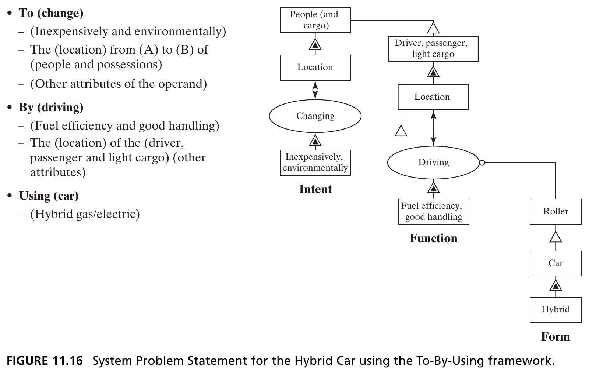
The To-By-Using framework maps directly onto the familiar OPM concept template (Fig. 7.4): intent → function → form. To change the location of people and cargo inexpensively and environmentally; by driving fuel-efficiently with good handling; using a hybrid car. Source: Crawley, Cameron & Selva (2016), Fig. 11.16.
From SPS to Detailed Goals
Given the SPS, we enumerate descriptive goals for each need the project intends to satisfy:
- Shall provide transportation performance
- Shall be inexpensive
- Shall have environmental satisfaction
- Shall accommodate a driver (size)
- Shall carry passengers and cargo
- Shall have good fuel efficiency
- Shall have desirable handling
- Shall satisfy regulatory requirements
Tip
Note we deliberately say goals, not “requirements” — architects must be free to make tradeoffs among them, which “shall” language tends to obscure.
Section 11.4 Summary
- Goals are enterprise-defined, prioritizable interpretations of stakeholder needs — evaluated against five criteria: representative, complete, humanly solvable, consistent, attainable
- The System Problem Statement, built with the To-By-Using framework, is the architect’s most powerful lever for shaping how a design team interprets the problem
- Early architecting should stay solution-neutral (To) as long as possible before adding solution-specific function (By) and form (Using)
11.5 Prioritizing Goals
Critical, Important, Desirable
Critical goals
The 3–7 absolute necessities for product success — “live or die” goals.
Important goals
Major goals that contribute to, but are not absolutely necessary for, success.
Desirable goals
Objectives that would be nice to meet, but are not critical to the project.
Tip
This framework allocates limited project resources: spend on critical goals, trade among important goals, and apply leftover resources to desirable goals.
Goals Need Metrics and Targets
- A goal without a metric and target value is incomplete — “should have good fuel efficiency” implies a metric (MPG) but sets no target
- The rigidity of a goal matters too: constraining (“must accommodate a driver of dimensions XYZ”) vs. unconstrained (“should have good fuel efficiency”) — the architect must decide which needs constrain the design, accepting the consequence of a narrower target market
Box 11.6 · Principle of Ambiguity and Goals
“Always aim higher than you want to climb, for one usually stops below the goal one sets.” — Traditional Chinese Saying
- The early phase of system design is characterized by great ambiguity — the architect must resolve it into a small, complete, consistent, humanly solvable set of goals
- No one designs or rigorously controls the upstream process — expect uncoordinated, incomplete, and conflicting inputs
- Because context and customer needs evolve, there must be a process to continuously reexamine and update the goals
Consistency and Attainability
- Consistency is subtle: many goals will genuinely conflict (range vs. battery weight) — the architect must understand whether that tradeoff is shallow, steep, or oddly shaped, sometimes only checkable with an analytical model
- Attainability means goals can be reached within technology, schedule, resource, and risk constraints — much easier for derivative products than clean-slate designs. When goals aren’t attainable: reduce scope, or add resources
Figure 11.17 · Checking Whether Goals Meet Criteria
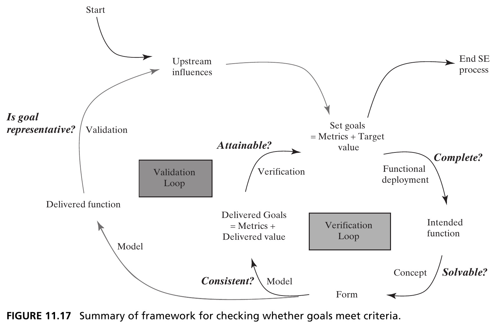
Two nested loops: the validation loop asks “is the goal representative?” by comparing delivered function against upstream influences; the verification loop asks “is it attainable, complete, consistent, solvable?” by comparing delivered goals against the concept, form, and intended function. Source: Crawley, Cameron & Selva (2016), Fig. 11.17.
Section 11.5 Summary
- Goals should be grouped as critical, important, and desirable — this framework governs how limited resources get allocated
- Every goal needs an explicit metric, target value, and a stated rigidity (constraining vs. unconstrained)
- Consistency and attainability may require analytical models to check — logical inspection alone is often not enough
Chapter 11 Summary
- Complex systems face real challenges managing stakeholders: many of them, often with unclear relative priority, sometimes providing only non-monetary inputs, and often delivering value indirectly
- Value delivery is an exchange — your outputs meet their needs, and their outputs meet yours
- Stakeholders should be prioritized by the inputs they provide to the project — directly or through indirect value loops
- Needs are translated into goals via the System Problem Statement and the To-By-Using framework, then checked against five criteria and prioritized as critical/important/desirable
Tip
Reference: Crawley, E., Cameron, B., & Selva, D. (2016). System Architecture: Strategy and Product Development for Complex Systems. Pearson. Chapter 11.
Case Study: 1998 Nagano Winter Olympics — Stakeholders in IT Architecture
IBM’s Daunting Scope
By Dr. Victor Tang, Director of IT Client Relations for IBM’s 1998 Olympic Winter Games
- IBM was contractually obligated to build, operate, and maintain the entire IT system for the Games: computing and delivering competitors’ results, accrediting athletes and staff, recording drug-testing results, and more
- 25 million lines of software; 10 mainframes, 5,000 PCs, 1,500 printers, 160 servers, 2,000 routers — serving ~150,000 athletes, officials, and volunteers
- A genuine system-of-systems: each constituent system has a different stakeholder, with distinct priorities, interests, and biases
Figure 11.18 · The Nagano IT System, Clients, and Users
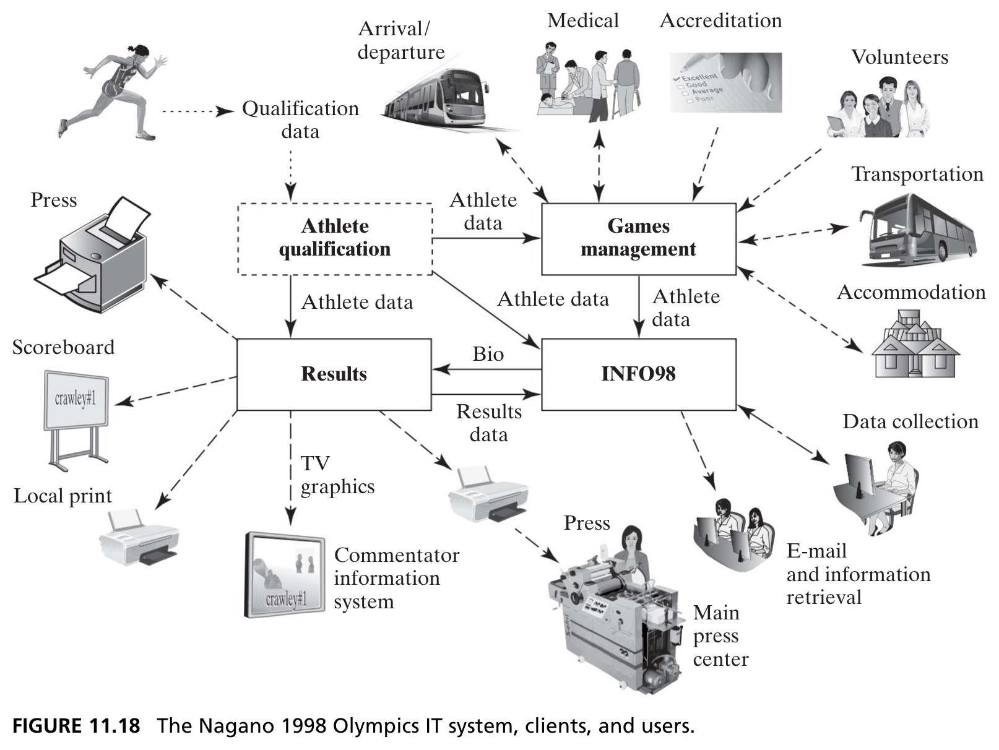
Athlete Qualification, Games Management, Results, and INFO98 form the core — surrounded by dozens of client stakeholders: press, medical, accreditation, transportation, accommodation, volunteers, and more. Source: Crawley, Cameron & Selva (2016), Fig. 11.18.
Rethinking IBM’s Strategy
- After a widely visible fiasco at the 1996 Atlanta Summer Games — showcasing products/technology that weren’t ready — the IOC told IBM they “didn’t find any part which worked well.”
- IBM shifted from a myopic product-technology-centric strategy to one where products and technology were the means to deliver a service, not the end itself
- IBM communicated this explicitly: “IT as a service…helping those running the Games, run the Games.” IBM had moved the system boundary
Co-Development With and Without X-Teams
| Task | Without X-Teams | With X-Teams |
|---|---|---|
| Requirements | IBM does; others only review | IBM + stakeholders co-develop and review |
| Write/run test cases | IBM does; others review | IBM + stakeholders co-develop, review |
| Training | IBM does; others concur | IBM + stakeholders co-develop, concur |
X-teams enable domain experts to work across organizational boundaries with their counterparts — stakeholders became competent spokespeople and credible advocates, not just critics. Source: Crawley, Cameron & Selva (2016), Fig. 11.19.
Rebuilding Trust Through the ICPG Process
- Four “IBM Must Do” goals emerged from the Atlanta debrief: meet all technical/management requirements, ensure no surprises during the Games, provide 24/7 operations, and ensure highly secure/usable systems
- IBM used International Competitions Prior to the Games (ICPGs) — practice events, often World Cup competitions — as a forum with sports federations and the IOC to surface and resolve errors before the real Games
- Solving the documented ICPG errors and shortcomings became management’s agreed interpretation of satisfying “all requirements” — turning an impossible-to-fully-specify requirement set into something tractable
Architecture as a Utility
“Form follows function.” — Louis Sullivan, inventor of the skyscraper
- IBM re-conceptualized the Olympics IT system as a utility: highly secure, plug-and-play, with networked servers as the power plant/distribution grid, applications as generators, and structured data as the utility’s output — serving stakeholders and the public as clients
- This concept was initially received with reserve and skepticism — a reminder that even sound architectural reframing has to earn buy-in
- The Results System — the most important subsystem — used stepwise decomposition and the classic pattern of reliability through redundancy, duplicating key components so a single failure never took down operations
Key Lessons Learned
1. To paraphrase Clemenceau: “IT architecture is too important to be left to technical experts.” IT is a technical expression of business policy — architecture must be positioned within that context to be meaningful to decision makers, stakeholders, and users.
2. The architect is always accountable for the integrity of the system, but not responsible for its implementation — which must be delegated. This is especially true for large-scale social and technical systems.
IBM began Nagano with zero confidence from the IOC. After the Games, the IOC director general said: “Technology at the Winter Games in Nagano has been outstanding.” IBM’s strategy of conceiving IT as a service — and its underlying architecture — was validated.
Next: Applying Creativity to Generating a Concept
Chapter 12 turns from goals back to synthesis — the structured creativity techniques architects use to generate concept alternatives once goals are in hand.
Tip
Reference: Crawley, E., Cameron, B., & Selva, D. (2016). System Architecture: Strategy and Product Development for Complex Systems. Pearson. Chapter 11.

← Course Home · Systems Architecture · Chapter 11